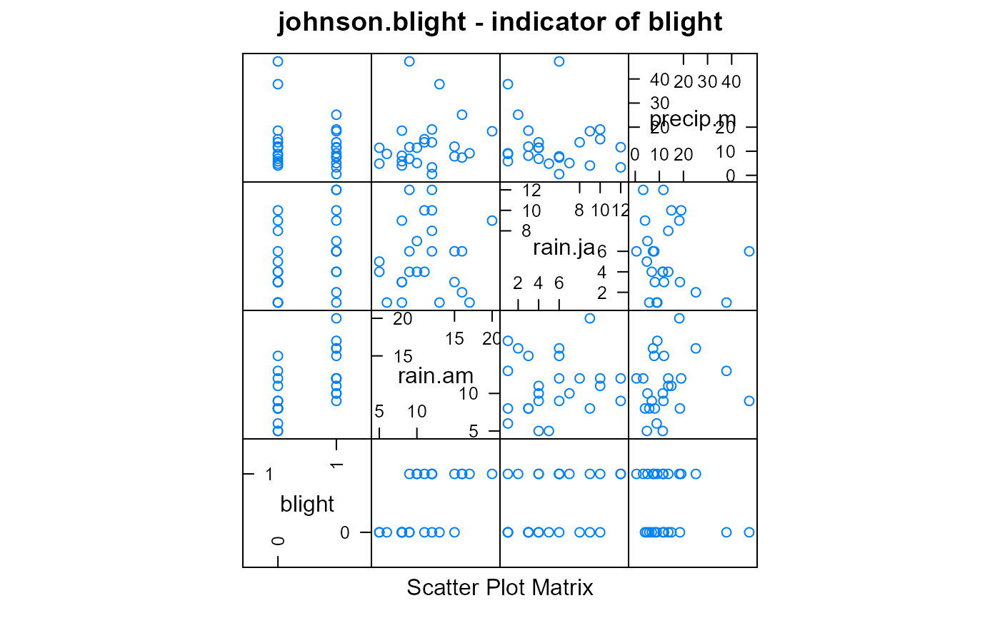

johnson.blight.RdPotato blight due to weather in Prosser, Washington
A data frame with 25 observations on the following 6 variables.
yearyear
areaarea affected, hectares
blightblight detected, 0/1 numeric
rain.amnumber of rainy days in April and May
rain.janumber of rainy days in July and August
precip.mprecipitation in May when temp > 5C, milimeters
The variable 'blight detected' is 1 if 'area' > 0.
Johnson, D.A. and Alldredge, J.R. and Vakoch, D.L. (1996). Potato late blight forecasting models for the semiarid environment of south-central Washington. Phytopathology, 86, 480--484. http://doi.org/10.1094/Phyto-86-480
Vinayanand Kandala, Logistic Regression
library(agridat) data(johnson.blight) dat <- johnson.blight # Define indicator for blight in previous year dat$blight.prev[2:25] <- dat$blight[1:24] dat$blight.prev[1] <- 0 # Need this to match the results of Johnson dat$blight.prev <- factor(dat$blight.prev) dat$blight <- factor(dat$blight) # Johnson et al developed two logistic models to predict outbreak of blight m1 <- glm(blight ~ blight.prev + rain.am + rain.ja, data=dat, family=binomial) summary(m1)#> #> Call: #> glm(formula = blight ~ blight.prev + rain.am + rain.ja, family = binomial, #> data = dat) #> #> Deviance Residuals: #> Min 1Q Median 3Q Max #> -2.42093 -0.24739 -0.04458 0.51326 1.30182 #> #> Coefficients: #> Estimate Std. Error z value Pr(>|z|) #> (Intercept) -11.4699 5.5976 -2.049 0.0405 * #> blight.prev1 3.8796 1.8066 2.148 0.0318 * #> rain.am 0.7162 0.3665 1.954 0.0507 . #> rain.ja 0.2587 0.2468 1.048 0.2945 #> --- #> Signif. codes: 0 '***' 0.001 '**' 0.01 '*' 0.05 '.' 0.1 ' ' 1 #> #> (Dispersion parameter for binomial family taken to be 1) #> #> Null deviance: 34.617 on 24 degrees of freedom #> Residual deviance: 13.703 on 21 degrees of freedom #> AIC: 21.703 #> #> Number of Fisher Scoring iterations: 7 #>## Estimate Std. Error z value Pr(>|z|) ## (Intercept) -11.4699 5.5976 -2.049 0.0405 * ## blight.prev1 3.8796 1.8066 2.148 0.0318 * ## rain.am 0.7162 0.3665 1.954 0.0507 . ## rain.ja 0.2587 0.2468 1.048 0.2945 ## --- ## Signif. codes: 0 '***' 0.001 '**' 0.01 '*' 0.05 '.' 0.1 ' ' 1 ## (Dispersion parameter for binomial family taken to be 1) ## Null deviance: 34.617 on 24 degrees of freedom ## Residual deviance: 13.703 on 21 degrees of freedom ## AIC: 21.703 m2 <- glm(blight ~ blight.prev + rain.am + precip.m, data=dat, family=binomial) summary(m2)#> #> Call: #> glm(formula = blight ~ blight.prev + rain.am + precip.m, family = binomial, #> data = dat) #> #> Deviance Residuals: #> Min 1Q Median 3Q Max #> -1.87484 -0.32997 -0.06489 0.54059 1.94218 #> #> Coefficients: #> Estimate Std. Error z value Pr(>|z|) #> (Intercept) -7.5483 3.8070 -1.983 0.0474 * #> blight.prev1 3.5526 1.6061 2.212 0.0270 * #> rain.am 0.6290 0.2763 2.276 0.0228 * #> precip.m -0.0904 0.1144 -0.790 0.4295 #> --- #> Signif. codes: 0 '***' 0.001 '**' 0.01 '*' 0.05 '.' 0.1 ' ' 1 #> #> (Dispersion parameter for binomial family taken to be 1) #> #> Null deviance: 34.617 on 24 degrees of freedom #> Residual deviance: 14.078 on 21 degrees of freedom #> AIC: 22.078 #> #> Number of Fisher Scoring iterations: 6 #>## Estimate Std. Error z value Pr(>|z|) ## (Intercept) -7.5483 3.8070 -1.983 0.0474 * ## blight.prev1 3.5526 1.6061 2.212 0.0270 * ## rain.am 0.6290 0.2763 2.276 0.0228 * ## precip.m -0.0904 0.1144 -0.790 0.4295 ## --- ## Signif. codes: 0 '***' 0.001 '**' 0.01 '*' 0.05 '.' 0.1 ' ' 1 ## (Dispersion parameter for binomial family taken to be 1) ## Null deviance: 34.617 on 24 degrees of freedom ## Residual deviance: 14.078 on 21 degrees of freedom ## AIC: 22.078 libs(lattice) splom(dat[,c('blight','rain.am','rain.ja','precip.m')], main="johnson.blight - indicator of blight")